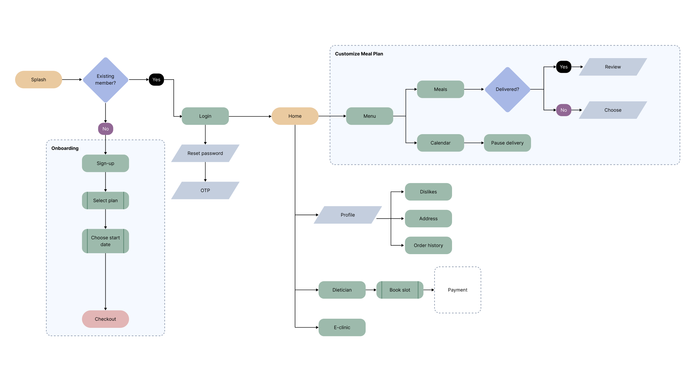
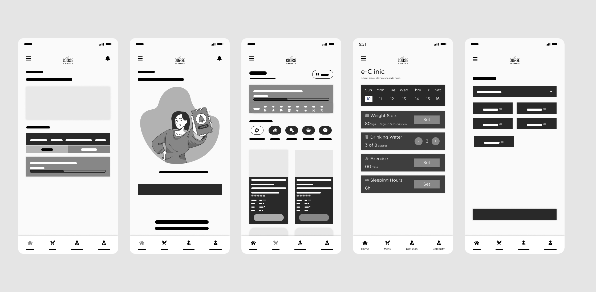
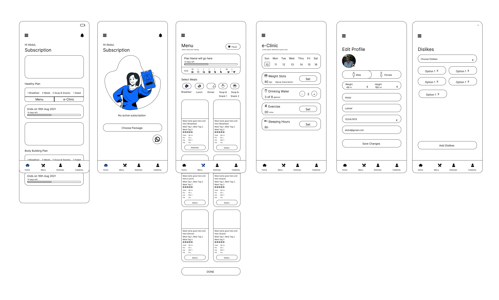
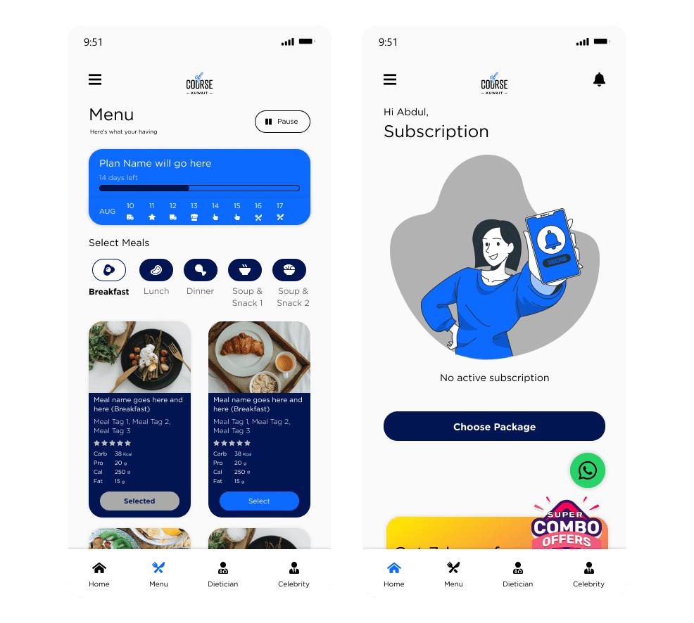
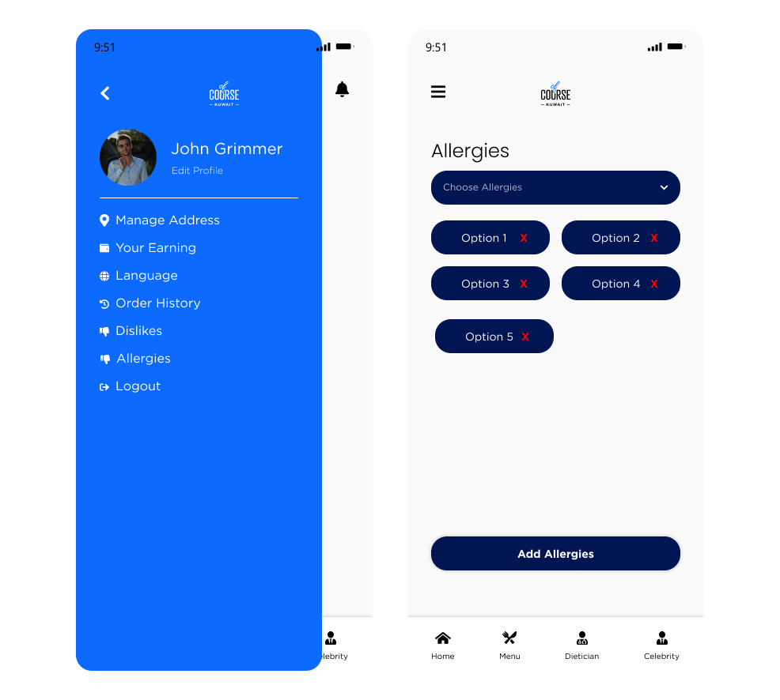

A mobile app for personalised, dietician-backed meal delivery in Kuwait, designed from scratch to stand out in a crowded food delivery market. Ranked #3 in Kuwait's Food & Drinks category at launch.

Overview
Kuwait's food delivery market was saturated with apps that sent you to a restaurant and dropped food at your door. What didn't exist was a service that prepared your meal, based on your dietary needs, with dietician oversight built in. OfCourse was that product, and it needed an app that could make personalised meal planning feel as simple as ordering a pizza.
The core challenge: how do you make a nutritionally complex, highly customisable product feel effortless to use?
Project goals
Research
I conducted six in-depth user interviews via Google Meet, recruiting across three distinct user types to ensure the design served a genuinely diverse audience, not just one segment.
The critical insight: All three groups shared the same underlying frustration: existing apps treated meal delivery as a logistics problem, not a personal health tool. The opportunity was to lead with customisation as a feature, not an afterthought.
We mapped the landscape of food delivery apps in Kuwait. The pattern was consistent: competitors delivered food from restaurants. None offered health-led, personalised meal preparation with dietician backing. This wasn't a gap. It was a market.
Customisation
Competitors allowed food choice at best. None offered dietary filtering, macro targets, or allergy management at the meal-plan level.
Delivery control
Pausing or rescheduling required contacting support. Users had to commit to a schedule they couldn't change.
Dietician support
No competitor offered access to a dietician within the app experience. This became a key differentiator.
Nutritional transparency
Most apps showed dish photos and prices. Nutritional detail, when present, was buried rather than front-and-centre.
Personas
Based on the interviews, I developed three personas to keep every design decision grounded in real user needs rather than assumptions.
Omar Khaled
31 · Tech professional, Kuwait City · Manages his diet around gym training, orders lunch at his desk most days.
Goals
Frustrations
Amina Farah
27 · Fitness enthusiast, Salmiya · Follows a strict meal plan and trains five days a week. Intolerant to gluten.
Goals
Frustrations
Sara Al-Hassan
38 · Working mother of two, Hawalli · Needs quick, healthy meals for her family on weekdays. No time to cook.
Goals
Frustrations
Design process
With clear personas and a defined problem, I mapped the core user flows before opening Figma. The goal was to make three key tasks achievable in as few taps as possible: customising a plan, pausing deliveries, and managing dietary preferences.

I started with lo-fi wireframes in Figma to validate structure and navigation before committing to visual design. Weekly sprint reviews with the development team kept the wireframes grounded in what was actually buildable.


The client had existing brand colours, so the visual direction was set. My job was to apply them in a way that felt fresh and health-forward. Three UI principles guided every screen:
Clean aesthetic
Minimalist layout focused on content (meal cards, nutritional data, and actions) without decorative clutter competing for attention.
Intuitive navigation
Bottom navigation with clear iconography. All key actions reachable within two taps from any screen.
Health-forward branding
The existing blue was adapted into a palette that felt fresh and trustworthy, conveying health and convenience rather than fast food.
Three components directly addressed the problems surfaced in research: meal plan cards with full nutritional breakdown, a pause/resume toggle for delivery management, and an in-app support icon for quick dietician contact.

Testing & iteration
I ran usability testing through Maze, a remote testing tool chosen for its accessibility during the pandemic. Participants completed tasks matching the three primary user flows. The results were largely positive, but two clear issues emerged.
Both issues were resolved before launch. I designed a dedicated Allergies screen, allowing users to select and manage multiple dietary restrictions independently. For performance, I collaborated with the development team to implement lazy loading and compressed all image and font assets.

Results
OfCourse launched to strong market reception, ranking #3 in Kuwait's Food & Drinks App Store category. The design system proved scalable enough that the same client launched two additional products off it: Dietbux (dietician management) and Done (delivery operations), without needing to rebuild from scratch. For me personally, this was the project that taught me the value of treating research as a design tool, not a checkbox.
Key takeaways